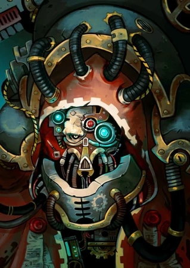

My Background
I was born in Irving, Texas, on May 9th, 2005, and I’ve lived there for pretty much my entire life. It’s where I grew up and where many of my personal interests and hobbies first started to take shape. I’ve always been someone who enjoys doing things that spark my imagination or teach me something new. One of my biggest hobbies is playing video games. I love games that make me think and let me be part of a story. I especially enjoy turn-based games and CRPGs, or computer role-playing games. These types of games often have deep lore, branching narratives, and strategic combat systems that challenge me in unique ways. What I really enjoy about CRPGs is how they allow me to make choices that affect the world and characters around me. It makes the game feel personal, like I’m shaping a story that’s truly mine. The freedom and creativity involved in these kinds of games are what keep me coming back to them. Outside of gaming, one of my other big interests is mythology. I’ve always been fascinated by myths from different cultures—especially Greek and Japanese mythology. I find their stories not only entertaining, but also full of interesting stories, creatures, symbolism, and insight into the cultures they come from. That being said, my favorite mythological creature actually comes from Persian mythology: the Manticore. There’s something about it that I find incredibly cool—the combination of a lion’s body, a human face, and a scorpion tail, (though more recently it is sometimes depicted with a spiked tail and dragon wings), is just so wild and imaginative. It might not be as well-known as creatures like dragons or centaurs, but that makes it even more interesting to me. Another major interest of mine is history. I’ve always been curious about how the world got to where it is today, and history gives us those answers. I don’t have a single favorite time period or region—whether it’s Africa, Asia, Europe, the Americas, I’m interested in it all. I like learning how different societies functioned, how people lived day to day, what they believed in, and what kind of technology or knowledge they had access to. I find it fascinating to look at how different civilizations organized their governments, structured their classes, fought their wars, and created their art. To me, history isn’t just a list of dates and names—it’s about the people, the lives they lived, and the lessons we can learn from them. There’s so much we can learn from the past, both in terms of avoiding mistakes and understanding the change in human nature. All in all, I’m someone who values learning and imagination. Whether it’s through games, stories, myths, or history books, I love exploring different worlds—real or fictional—and understanding what makes them unique. These interests continue to shape how I see the world and how I want to engage with it moving forward.
My Avatar
I decided to use this image as my avatar for a few different reasons. Originally, I was just going to go with a standard profile picture of myself,something simple and straightforward, but after thinking about it a bit more, I realized that it was a bit too boring for my taste. Thats why I instead chose this guy for my profile picture, someone that can a show a bit of personality in a more creative way. If you're curious, hovering over the avatar reveals who the character is and where the image comes from, though, if you’re familiar with the Warhammer 40,000 universe, you might recognize it right away. The image is of a character that’s part of the Adeptus Mechanicus, a faction in the Warhammer 40K universe that is absolutely obsessed with machines, technology, and the worship of knowledge itself. Lately, I’ve been playing a game that features the Adeptus Mechanicus heavily, and their aesthetic and ideology fascinated me. They blend ancient tradition with futuristic machinery, and they see technology not just as a tool, but as something almost divine. I thought that was such a unique and intense take on how people relate to technology. But beyond just liking the way the image looks or the lore behind it, I also felt like it made a weird kind of sense for where I am in life right now. I’m currently studying in a Web Developer AAS degree program, where I’m learning all about coding, web development, and how to build functional, interactive digital experiences. I spend a lot of time thinking about how technology works and how to use it to create something useful or beautiful. In a very weird way, my career path of choice relates to the Adeptus Mechanicus: a group of people who are passionate about machines and strive to understand them. Using this avatar lets me express that part of my identity in a subtle, fun way. It shows that I love gaming and Table Top Games, sure,but it also hints at my deeper interests in technology, logic, and design. It connects the fictional things I enjoy to the very real goals I’m working toward in school and eventually in my career. And finally, the last reason I chose this as my profile picture is simply because I think it looks really cool. And sometimes, that’s more than enough reason on its own. In the end, my avatar is more than just a picture. It’s a small but meaningful way of showing who I am, what I enjoy, and where I’m headed.
My Web Development Journey
Right now, I’m enrolled in the Web Developer AAS (Associate of Applied Science) degree program, which is designed to teach me the skills needed to create functional, user-friendly, and visually appealing websites. This degree focuses on a wide range of web development topics, including HTML, CSS, JavaScript, linux configuration, Python, and back-end programming. I’ve always had a strong interest in technology, especially the behind-the-scenes side of how websites, apps, and programs work. For a long time, I wanted to learn how to code, but I didn’t really know where to begin. The internet is full of resources—YouTube tutorials, online courses, forums, but the sheer amount of information out there can be overwhelming, especially when you’re just starting out. There are so many different programming languages to choose from, like Python, JavaScript, PHP, and more, each with their own specific uses, syntax, and learning curves. On top of that, there are frameworks, libraries, tools, and best practices to consider. Without structure or guidance, I found it hard to focus or even figure out which path would be best for me. That’s one of the main reasons I decided to go to college and enroll in a formal program. I knew that having a structured environment and a clear curriculum would help me learn more efficiently and stay on track. I’m learning step-by-step, starting with the basics and gradually building up to more complex concepts. It’s exactly what I needed to finally gain momentum and move forward with my goals. While I’m not exactly sure where I’ll end up after I complete my degree, I do have a general direction in mind. Naturally, I plan to look for a job in web development, since that’s what my degree is focused on. It only makes sense to apply what I’ve learned in a professional setting, and I’m eager to put my skills to work. Whether it’s building websites for businesses, working at a creative agency, maintaining web platforms, or even freelancing, I’m open to different opportunities that will help me grow and gain experience. What’s most important to me is that I’m finally on a path that feels right. I’m doing something that interests me, and something that has real world applications. Web development is a constantly evolving field, and there’s always something new to learn, which keeps it exciting. As I continue with my studies, I’m becoming more confident in my abilities and more excited about the future. In the end, I may not have every step of my journey planned out yet, but I know I’ve taken the first big step in the right direction,and that’s what really matters.